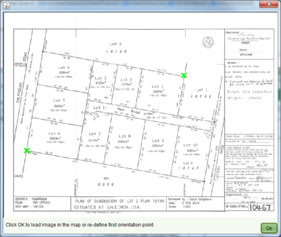

When performing a Change to Cadastre or Redefine Cadastre service, you can choose to add an image of the plan to the Map Viewer to assist with digitizing the survey point data directly from the plan.
To add a plan image to the map you must first have an image file available on your local hard drive. The file formats supported by the Map Viewer are TIFF, PNG and JPEG. Before adding the image, you should also select the target parcels as they may be difficult to select after the image is added.
The Add Image tool works by matching two points you select on the map with two points you
select from the image. Before adding the image, you should compare the plan to the Map Viewer
and identify two candidate parcel nodes that exist on both the plan and the Map Viewer.
For the best match accuracy, the first node you select should be at the bottom left of the
plan image and the second point at the top right (or top left and bottom right). Note that
the current Add image tool does not rotate the image. If the plan does not have the standard
North orientation, then do not attempt to digitize from the plan as the result will be
inaccurate.
works by matching two points you select on the map with two points you
select from the image. Before adding the image, you should compare the plan to the Map Viewer
and identify two candidate parcel nodes that exist on both the plan and the Map Viewer.
For the best match accuracy, the first node you select should be at the bottom left of the
plan image and the second point at the top right (or top left and bottom right). Note that
the current Add image tool does not rotate the image. If the plan does not have the standard
North orientation, then do not attempt to digitize from the plan as the result will be
inaccurate.
Once you have the image file ready, identified the two matching points and selected your
target parcels, click the Add image tool . You will be prompted to select the first of two points on the
Map Viewer. Zoom in if necessary to ensure your selection is accurate. You will then be
prompted to select a second point. Again, zoom in if necessary to ensure your selection is
accurate.
. You will be prompted to select the first of two points on the
Map Viewer. Zoom in if necessary to ensure your selection is accurate. You will then be
prompted to select a second point. Again, zoom in if necessary to ensure your selection is
accurate.
The Add Image tool will then prompt you to select your image file from your local hard drive. Upon making your selection, the image file will be displayed in the Add Image Preview dialog. You can enlarge this dialog as necessary to improve your selection accuracy. Click the image at the location matching the first point you selected from the map. A green cross will appear on the image. Click the image at the location matching the second point from the map and a second green cross will appear.

Add Image Preview dialog with two selections
To proceed, click the OK button on the Add Image Preview dialog. The image will be scaled as required and displayed in the Map Viewer. The image will display on top of the standard Map Viewer navigation layers, but will appear below the editing layers added for Change to Cadastre and Redefine Cadastre.
If you make a mistake, you can remove the image from the Map Viewer using the Remove Image
tool and
re-add the image. You can also change your selections in the Add Image Preview dialog by
re-selecting the location of the first point after you have added the second point. Be aware
that re-selecting the first point will require you to re-select your second point as well.
and
re-add the image. You can also change your selections in the Add Image Preview dialog by
re-selecting the location of the first point after you have added the second point. Be aware
that re-selecting the first point will require you to re-select your second point as well.